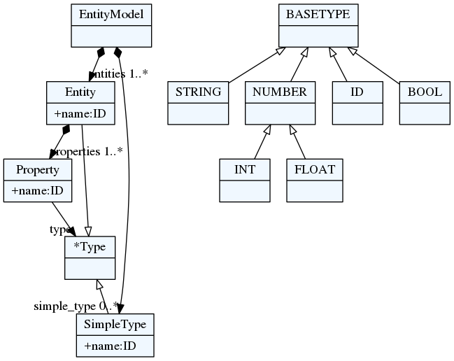

Entity tutorial
A tutorial for building ER-like language and generating Java code.
Entity language
In this example we will see how to make a simple language form data modeling. We will use this language to generate Java source code (POJO classes).
Our main concept will be Entity. Each entity will have one or more
properties. Each property is defined by its name and its type.
Let's sketch out a model on our language.
entity Person {
name : string
address: Address
age: integer
}
entity Address {
street : string
city : string
country : string
}
The grammar
In our example we see that each entity starts with a keyword entity. After
that, we have a name that is identifier and open brace.
Inside braces we have properties. In textX this is written as:
Entity:
'entity' name=ID '{'
properties+=Property
'}'
;
We can see that the Entity rule references Property rule from the
assignment. Each property is defined by the name, semi-colon (:) and the
name of the type. This can be written as:
Property:
name=ID ':' type=ID
;
Now, grammar like this will parse a single Entity. We haven't stated yet that
that our model consists of many Entity instances.
Let's specify that. We are introducing rule for the whole model which states
that each entity model contains one or more entities.
EntityModel:
entities+=Entity
;
This rule must be first rule in the textX grammar file. First rule is always
considered a root rule.
This grammar will parse the example model from the beginning.
Meta-model now looks like this:

While the example Person model looks like this:

What you see on the model diagram are actual Python objects.
It looks good, but it would be even better if a reference to Address from
properties would be actual Python reference, not just a value of str type.
This resolving of object names to references can be done automatically by textX.
To do so we shall change our Property rule to be:
Property:
name=ID ':' type=[Entity]
;
Now, we state that type is a reference (we are using []) to object of class
Entity. This instructs textX to search for the name of Entity after the
colon and when found to resolve it to an Entity instance with the same name
defined elsewhere in the model.
But, we have problem now. There are no entities called string and integer
which we use for several properties in our model. To remedy this, we must
introduce dummy entities with those names and change properties attribute
assignment to be zero or more (*=) since our dummy entities will have no
attributes.
Although, this solution is possible it wouldn't be elegant at all. So let's
do something better. First, let's introduce an abstract concept called Type
which will be generalization of simple types (like integer and string) and
complex types (like Entity).
Type:
SimpleType | Entity
;
This is called abstract rule, and it means that Type is either SimpleType
or Entity instance. Type class from the meta-model will never be
instantiated.
Now, we shall change our Property rule definition:
Property:
name=ID ':' type=[Type]
;
And, at the end, there must be a way to specify our simple types. Let's do that at the beginning of our model.
EntityModel:
simple_types *= SimpleType
entities += Entity
;
And the definition of SimpleType would be:
SimpleType:
'type' name=ID
;
So, simple types are defined at the beginning of the model using keyword type
after which we specify the name of the type.
Our person model will begin now with:
type string
type integer
entity Person {
...
Meta-model now looks like this:

While the example Person model looks like this:

But, we can make this language even better. We can define some built-in simple
types so that the user does not need to specify them for every model. This has
to be done from python during meta-model instantiation. We can instantiate
integer and string simple types and introduce them in every model
programmatically.
First problem is how to instantiate SimpleType class. textX will dynamically
create Python class for each rule from the grammar but we do not have access
to these classes in advance.
Luckily, textX offers a way to override dynamically created classes with user
supplied ones. So, we can create our class SimpleType and register that class
during meta-model instantiation together with two its instances (integer and
string).
class SimpleType(object):
def __init__(self, parent, name): # remember to include parent param.
self.parent = parent
self.name = name
Now, we can make a dict of builtin objects.
myobjs = { 'integer': SimpleType(None, 'integer') 'string': SimpleType(None, 'string') }
And register our custom class and two builtins on the meta-model:
meta = metamodel_from_file('entity.tx',
classes=[SimpleType],
builtins=myobjs)
Now, if we use meta to load our models we do not have to specify integer and
string types. Furthermore, each instance of SimpleType will be an instance
of our SimpleType class.
We, can use these custom classes support to implement any custom behaviour in our object graph.
Generating source code
textX doesn't impose any specific library or process for source code generation.
You can use anything you like. From print function to template engines.
I highly recommend you to use some of well established template engines.
Here, we will see how to use Jinja2 template engine to generate Java source code from our entity models.
First, install jinja2 with pip:
$ pip install Jinja2
Now, for each entity in our model we will render one Java file with getters and setters rendered for each property.
Let's write Jinja2 template (file java.template):
// Autogenerated from java.template file
class {{entity.name}} {
{% for property in entity.properties %}
protected {{property.type|javatype}} {{property.name}};
{% endfor %}
{% for property in entity.properties %}
public {{property.type|javatype}} get{{property.name|capitalize}}(){
return this.{{property.name}};
}
public void set{{property.name|capitalize}}({{property.type|javatype}} new_value){
this.{{property.name}} = new_value;
}
{% endfor %}
}
Templates have static parts that will be rendered as is, and variable parts
whose content will came from the model. Variable parts are written inside
{{}}. For example {{entity.name}} from the second line is the name of
the current entity.
The logic of rendering is controlled by tags written in {%...%} (e.g. loops,
conditions).
We can see that this template will render a warning that this is auto-generated code (it is always good to do that!). Than it will render Java class named after the current entity and than, for each property in the entity (please note that we are using textX model so all attribute names come from the textX grammar) we are rendering Java attribute and after that we are rendering getters and setters.
You could notice that for rendering proper Java types we are using |javatype
expression. This is called filter in Jinja2. It works similar to unix pipes.
You have an object and you pass it to some filter. Filter will transform given
object to some other object. In this case javatype is a simple python function
that will transform our types (integer and string) to proper Java types
(int and String).
Now, let's see how can we put this all together. We need to initialize Jinja2 engine, instantiate our meta-model, load our model and than iterate over entities from our model and generate Java file for each entity:
from os import mkdir
from os.path import exists, dirname, join
import jinja2
from textx.metamodel import metamodel_from_file
this_folder = dirname(__file__)
class SimpleType(object):
def __init__(self, parent, name):
self.parent = parent
self.name = name
def __str__(self):
return self.name
def get_entity_mm():
"""
Builds and returns a meta-model for Entity language.
"""
type_builtins = {
'integer': SimpleType(None, 'integer'),
'string': SimpleType(None, 'string')
}
entity_mm = metamodel_from_file(join(this_folder, 'entity.tx'),
classes=[SimpleType],
builtins=type_builtins)
return entity_mm
def main(debug=False):
# Instantiate Entity meta-model
entity_mm = get_entity_mm()
def javatype(s):
"""
Maps type names from SimpleType to Java.
"""
return {
'integer': 'int',
'string': 'String'
}.get(s.name, s.name)
# Create output folder
srcgen_folder = join(this_folder, 'srcgen')
if not exists(srcgen_folder):
mkdir(srcgen_folder)
# Initialize template engine.
jinja_env = jinja2.Environment(
loader=jinja2.FileSystemLoader(this_folder),
trim_blocks=True,
lstrip_blocks=True)
# Register filter for mapping Entity type names to Java type names.
jinja_env.filters['javatype'] = javatype
# Load Java template
template = jinja_env.get_template('java.template')
# Build Person model from person.ent file
person_model = entity_mm.model_from_file(join(this_folder, 'person.ent'))
# Generate Java code
for entity in person_model.entities:
# For each entity generate java file
with open(join(srcgen_folder,
"%s.java" % entity.name.capitalize()), 'w') as f:
f.write(template.render(entity=entity))
if __name__ == "__main__":
main()
And the generated code will look like this:
// Autogenerated from java.template file
class Person {
protected String name;
protected Address address;
protected int age;
public String getName(){
return this.name;
}
public void setName(String new_value){
this.name = new_value;
}
public Address getAddress(){
return this.address;
}
public void setAddress(Address new_value){
this.address = new_value;
}
public int getAge(){
return this.age;
}
public void setAge(int new_value){
this.age = new_value;
}
}
Note
The code from this tutorial can be found in the examples/Entity folder.